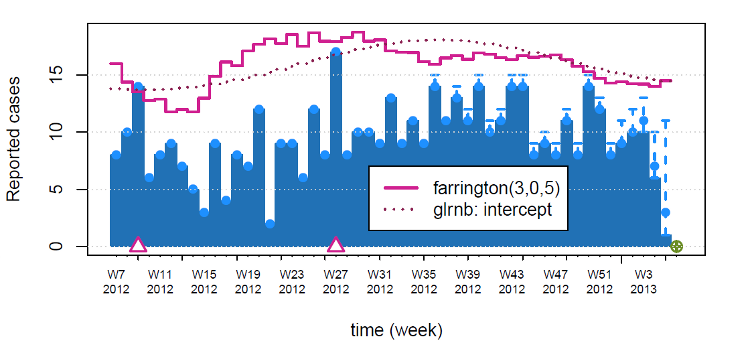
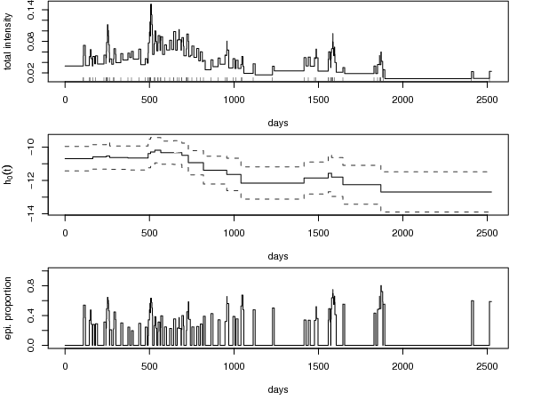
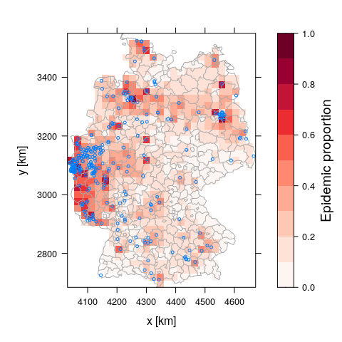

Modeling and Monitoring Epidemic Phenomena
-
algo.farrington()+algo.glrnb()+nowcast(): - 
-
backprojNP(): 
-
hhh4(): -

-
twinSIR(): - 
-
twinstim(): - 
Links
- Download from CRAN at
https://cloud.r-project.org/package=surveillance - Browse source code on GitHub mirror at
https://github.com/r-forge/surveillance/tree/master/pkg
License
Citation
Developers
-
Michael Höhle
Author, thesis advisor -
Sebastian Meyer
Author, maintainer - Michaela Paul
Author - More on authors...